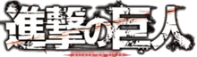

dale
O Mangá
Os capítulos de Shingeki no Kyojin são serializados na revista mensal Bessatsu Shōnen Magazine desde 9 setembro de 2009, com os capítulos compilados e publicados em volumes tankōbon pela editora Kodansha.[27][28] Isayama estima que leva uma semana para trabalhar na história e duas para desenhar um capítulo de 40 páginas.[29] A história é planejada com antecedência, até é marcado quais volumes terá uma especifica "revelação".[29] Com o primeiro volume sido lançado em março de 2010.[30] Tendo um ritmo de 3 volumes lançados por ano, sendo que desde 2011, os volumes saem em abril, agosto e dezembro de cada ano. No Brasil, o mangá é licenciado e publicado como "Ataque dos Titãs" pela editora Panini Comics desde novembro de 2013.[31] Em Portugal, o mangá está em lançamento, desde 3 de setembro de 2018, pela JBC Portugal com o título ''Ataque dos Titâs.[32]